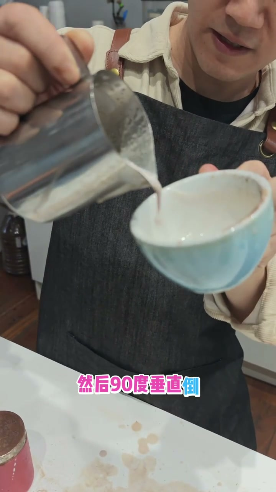
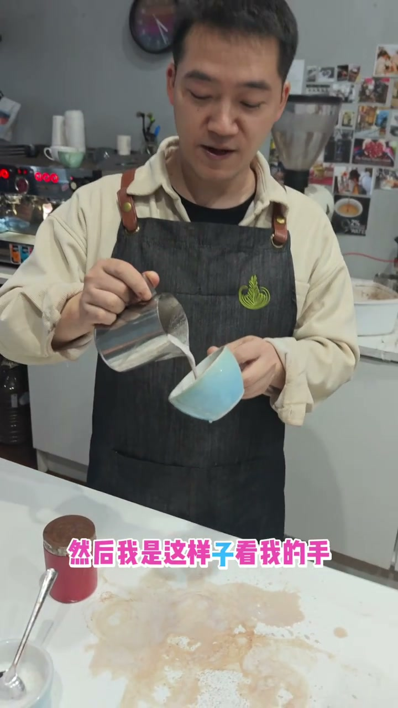

回杯技巧：倾斜身体
查看原视频 English Version核心技巧
- 回杯（压纹时把杯子从90度回正到水平）不需要用手/手腕
- 用身体倾斜代替手腕转动，手可以完全不动
- 好处：手的注意力集中在摆动和流量控制上，不受回杯干扰
什么是回杯？
拉花时杯子从垂直（90°）逐渐回正到水平（0°）。回杯让奶油全部从杯壁流出来，同时也控制奶泡在液面上的展开位置。

手回杯 vs 身体回杯
❌ 用手回杯
手腕转动来倾斜杯子
手腕既要摆动又要回杯
两个动作互相干扰
手部负担大，容易失误
✅ 用身体回杯
身体自然倾斜，手完全不动
手腕只负责摆动和流量
回杯由身体承担
手部干扰降到最低

为什么身体回杯更好？
拉花时手部需要同时完成三个动作：控制流量、摆动、回杯。把回杯的任务交给身体后，手只需要做两件事——摆动+流量控制。手的重力可以更集中在这两个核心动作上，整体表现更稳定。
核心原则：减少手部动作种类，让手只专注于摆动和流量
文字转录（36段）
以下内容按 Whisper 原始分段完整呈现，可能包含识别误差。
- [0:00]你看边压奶油也叫回杯
- [0:02]这两个是90度
- [0:04]你看
- [0:06]就是这样倒
- [0:09]90度垂直倒 倒倒倒倒倒倒到平
- [0:11]奶油全部出来
- [0:13]这个意思就是90度
- [0:15]所以你看我这样子
- [0:17]那我说90度实际上这样就不是90度了
- [0:19]就回杯
- [0:21]同时回杯的意思
- [0:24]同时回杯
- [0:26]可以看一下我的身体
- [0:28]所以我是这样靠我手努力的回背
- [0:30]我手努力的回背有点难
- [0:32]你们心脏能够溢出来
- [0:34]看我现在呢
- [0:36]通过身体看
- [0:39]做的时候通过身体回背
- [0:41]我手是不用动的哦
- [0:43]看我身体回背就可以了
- [0:45]收一下
- [0:47]这是手来回背
- [0:49]这是两手看我的手腕有转动
- [0:51]你看看有转动
- [0:53]现在我的手不转动哦
- [0:56]看我身体
- [0:58]看身体
- [1:00]这样手
- [1:02]做的重力就可以集中在
- [1:04]怎么摆动
- [1:06]怎么观察着美术
- [1:08]就不用考虑回背的事情
- [1:11]因为回背是看着身体来的
- [1:13]看着身体来的
- [1:15]就可以让你手部动作减少一点干扰